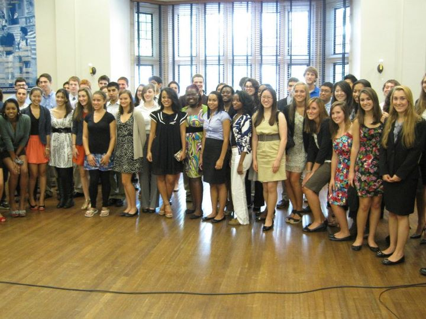
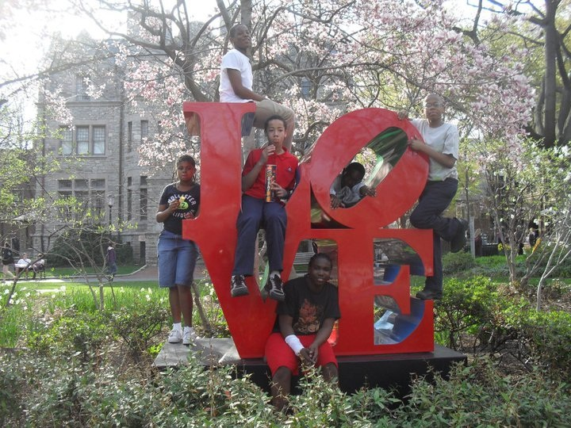

First GBM of Spring Semester
Saturday, February 4, 2012
Harrison Lower Lobby 12, 1:30pm – 2:30pm
Our first GBM of the spring semester was such a success! Members enjoyed delicious cupcakes and donuts while we discussed our upcoming plans for the rest of the year. We also handed out our NSCS Certificate of Recognition in Exemplary Community Service to our winning member – Congrats Kelsey!
Spring Activities Fair
Sunday, January 15, 2012
Houston Hall, 11am – 3pm
Thanks everyone for coming out to learn more about one of Penn’s most prominent honor societies! We had a lot of interest in our NSCS chapter, and we’re excited to see more prospective members join our team!
NSCS Study Marathon
Sunday, December 11, 2011
Rodin, 13th Floor Lounge
Our NSCS study marathon was such a great event for our chapter during finals week! We enjoyed delicious coffee, hot chocolate, and Dunkin’ Donuts as we prepared to ace our finals!
NSCS Inducion 2011
Sunday, September 18, 2011
Houston Hall, Bodek Lounge

Our NSCS Induction Ceremony this year was a great success! Our members enjoyed talks from special guests such as Rising Sons and the West Park Cultural Center, all the while getting to know their fellow inductees. After taking the official oath, everyone enjoyed a celebratory NSCS cake and delicious snacks. Welcome new NSCS members!
March to College Day
Monday, April 11, 2011
All Over Penn’s Camp

March to College Day and the Assembly at Charles Drew School were both incredible PACE events! The kids were awesome, so creative (definitely check out the Marshmallow Challenge pics) and so interested in college! It was really great showing them around campus and answering their questions (especially the ones about “Transformers 2″ being filmed at Penn).
Pace Assembly
Friday, April 8, 2011
Harrison Underground
March to College Day and the Assembly at Charles Drew School were both incredible PACE events! The kids were awesome, so creative (definitely check out the Marshmallow Challenge pics) and so interested in college! It was really great showing them around campus and answering their questions (especially the ones about “Transformers 2″ being filmed at Penn).
Rush NSCS
Thursday, April 7, 2011
Harrison Underground
R.U.S.H. was exciting with current board members sharing their experiences about NSCS and encouraging Freshmen and Sophomore attendants to join. Hopefully, these are the faces of our new members!!!
Ronald McDonald Community Service
Tuesday, February 15, 2011
Philadelphia Ronald McDonald House
Guest Speaker Event
Dr. David Perlman
Feburary 9th, 2011
Houston Hall
Our discussion today was very enlightening, going forward, especially as we progress into entering our professional careers. Dr. Perlman really provided us with some wonderful real-world examples where traversing on the path of integrity is not as easy as it seems, once out in the real world.
Integrity Week: Making I-Guys
Monday, Feburary 7, 2011
Harnwell, 5th floor